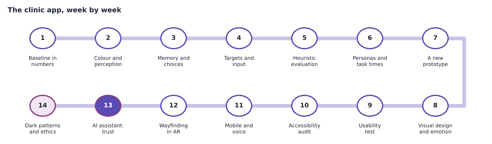
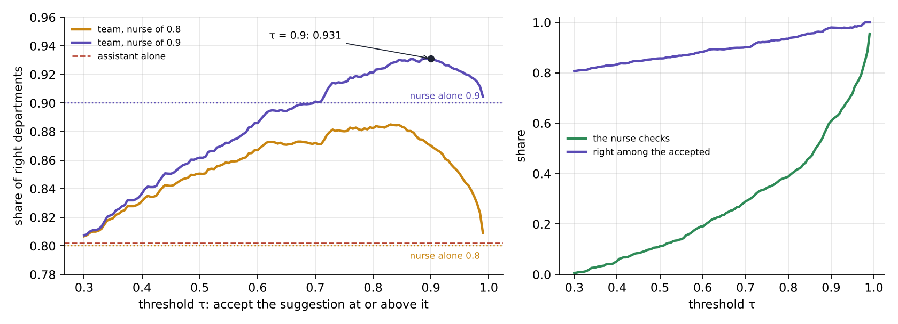
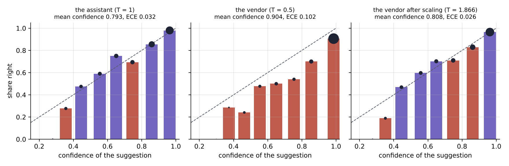
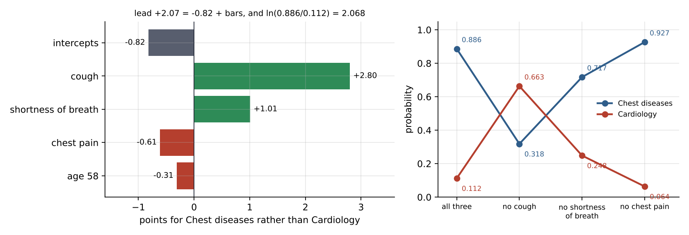
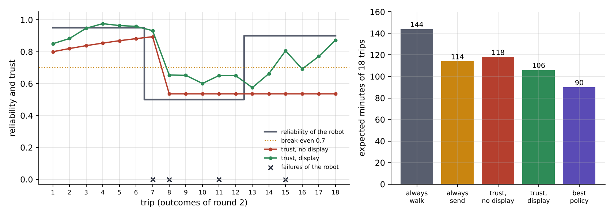
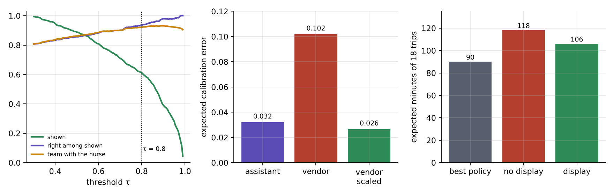

Overview
Weeks 1 to 12 designed the clinic app for people. This week, the app gains a colleague that is not human. An assistant of artificial intelligence (AI) suggests a department from the complaints of a patient. Such an assistant helps only when people rely on it when it is right and check it when it is wrong. This week measures that reliance and makes the confidence of the assistant honest with calibration. It explains the suggestions so that people can predict them, and it follows trust over time as a delivery robot fails after an update. The clinic app reaches stage 13, an AI assistant that suggests a department. The Python step turns counts and scores into probabilities. The week closes with assistants that talk.
Week at a glance
flowchart LR A["Trust and reliance"] --> B["Confidence and calibration"] B --> C["Explanations"] C --> D["Trust over time"] D --> E["Interface clinic"] E --> F["The human side"] F --> S["The clinic app, stage 13"] S --> G["Toward conversational assistants"]
Every method on this page is also written as Python code in the Colab notebook of the week. Its code is divided into numbered sections. Each orange box on this page names the section whose code carries out what the text above the box explains. The box says what to run and what to look at in that section, and its button opens the Colab notebook at that place. The games, the practice parts and the self-assessment of the week are in the interactive lab. Each violet box opens one part of the interactive lab. The part ends with a link back to its box on this page, and the Colab notebook is always opened from the orange boxes here.
Python step 13: Probabilities from counts and scores
Python code in the Colab notebook, right after Section 0 (setup). Open the Colab notebook and run this step cell by cell: It consists of short pieces of Python code with their explanations, a quick check and three exercises. Topics: Shares from an array of zeros and ones · A score becomes a probability: The logistic function · Several scores become probabilities: The softmax function · Many patients at once: Rows and the axis.
The step computes shares from arrays of zeros and ones and from comparisons, which NumPy turns into arrays of True and False [1]. It turns a score into a probability with the logistic function, and several scores into probabilities that add up to 1 with the softmax function. Finally, it does the same for many patients at once, one row per patient. The sections of the week use these pieces for the confidence of the assistant, for calibration and for explanations. Students who have never programmed start with the start-here notebook of the course.
Weeks 1 to 11 measured the booking flow, fitted it to human abilities, tested it with patients, removed its barriers and moved it onto the phone. Week 12 took the app into the building with a virtual tour and arrows of augmented reality.
This week adds an assistant that suggests a department. Stage 13 shows its suggestion with an honest confidence and a short explanation, and it refers uncertain patients to the triage nurse.

Trust and reliance
Lee and See reviewed how people come to trust automation [2]. Automation is often problematic because people fail to rely on it appropriately. People respond to technology socially, so trust influences how far they rely on it. Trust matters most when the automation is too complex to understand completely. Trust is calibrated when it matches the capability of the automation. Its resolution describes how well it follows changes in that capability.
Parasuraman and Riley named the ways in which this partnership fails [3]. Misuse is overreliance on automation, which leads to failures of monitoring and to biased decisions. Disuse is the neglect or underuse of automation, often after false alarms. Abuse is automation that designers and managers introduce without due regard for its consequences for human performance. Week 3 introduced automation bias, a form of misuse.
For an assistant that suggests a department, reliance can be counted. Each suggestion is right or wrong, and the nurse accepts it or decides alone. Accepting a wrong suggestion is overreliance, and changing a right one is underreliance. The goal is not the highest trust but appropriate reliance: Accepting the assistant when it is right and deciding alone when it is wrong.
Part A of the interactive lab puts you at the triage desk of the clinic. Twelve patients arrive in each round. The assistant suggests a department from the complaints on the form, and you can ask the patient a question before you decide. Round 1 shows the suggestion alone, and round 2 adds its confidence.
Interactive lab, Part A. The triage desk in 3D: Twenty-four patients, an assistant that suggests a department and a question that you can ask before you decide. The results can be copied into the Colab notebook.
Scene: The plane of trust and capability. A nurse at the triage desk works with an assistant that suggests a department. Step through four moments with the buttons and watch where she stands on the board, which source she relies on and the door that the patient takes. The readout names the step, the capability, the trust and what the nurse relies on.
In the scene, the nurse moves through the plane of Lee and See. A new assistant meets distrust, weeks of good suggestions calibrate the trust, and a silent update leaves it too high. A confidence on the screen lets the trust follow each suggestion instead of the assistant as a whole.
A nurse cannot check every suggestion, because checking costs time. A simple policy accepts the suggestions whose confidence \(c\) reaches a threshold \(\tau\), and the nurse decides the rest alone. The accuracy of this team is:
\(s\) is the share of suggestions with \(c \ge \tau\), \(a_{\text{hi}}\) is the share of them that are right, and \(h\) is the accuracy of the nurse who decides alone. The formula assumes that the nurse is as accurate for the uncertain patients as for all patients. These are often the hard cases, so \(A\) is an upper estimate.
→ This formula with numbers, step by step: Lab Part B, first calculator, steps 1 to 4.
A worked example. On 1,000 new synthetic patients, the assistant of this week is right 0.802 of the time. At \(\tau = 0.9\), its confidence reaches the threshold for \(s = 0.391\) of the patients, and \(a_{\text{hi}} = 0.980\) of these suggestions are right. With a nurse who is right \(h = 0.9\) of the time, \(0.391 \times 0.980 = 0.383\) and \(0.609 \times 0.9 = 0.548\), so \(A = 0.383 + 0.548 = 0.931\). The team is more accurate than the assistant alone and than the nurse alone. The price is that the nurse checks 0.609 of the patients.
The formula also shows which suggestions to check. When the confidence is calibrated, a suggestion with the confidence \(c\) is right with the probability \(c\). Accepting it beats deciding alone exactly when \(c > h\). A calibrated assistant should therefore be relied on when its confidence exceeds the accuracy of the person who would decide instead. Bansal and colleagues call a team that outperforms both of its members complementary [4].

Interactive lab, Part B. Reliance and confidence step by step: Two calculators with presets, the accuracy of a team with a threshold and the confidence and the Brier score of one suggestion.
Python code in the Colab notebook, Section 1. Open Section 1 of the Colab notebook and run it. The function make_patients generates the synthetic patients, and the assistant learns from 1,500 of them. The code prints its accuracy on 1,000 new patients, by department. The function team_accuracy carries out the formula of this section for five thresholds, and a figure draws the team against the threshold. Paste your results of Part A into MY_TRIAGE: The code counts the wrong suggestions that you accepted and the right ones that you changed.
Check your understanding. The assistant suggests Neurology, the patient belongs to Neurology, and the nurse sends the patient to Orthopedics. What is this?
- When did you last accept a suggestion of a navigation app or a spelling checker without checking it?
- What does a nurse lose when she checks every suggestion, and what when she checks none?
- Who should set the threshold of the clinic: The vendor, the nurses or the patients?
Confidence and calibration
The assistant of this week is a logistic regression, trained with scikit-learn [5] on 1,500 synthetic patients. It computes a score \(z_k\) for each department from the complaints and the age of a patient. The softmax function of Python step 13 turns the scores into probabilities, and the largest probability is the confidence of the suggestion:
\(z_k\) is the score of department \(k\), \(p_k\) its probability and \(T\) the temperature, which is 1 for the assistant as trained. A temperature below 1 sharpens the probabilities, and one above 1 flattens them.
A confidence of 0.8 is calibrated when 80 percent of the suggestions with that confidence are right. A reliability diagram sorts the suggestions into bins of confidence. It compares the mean confidence \(\bar c_b\) of each bin with its share right \(a_b\). The expected calibration error (ECE) weighs the gaps by the size of the bins [6]. The Brier score (BS) comes from the verification of weather forecasts [7]:
\(n_b\) is the number of suggestions in bin \(b\), and \(N\) their total. \(p_{ik}\) is the probability that the assistant gives to department \(k\) for patient \(i\), and \(o_{ik}\) is 1 for the right department and 0 otherwise. The ECE looks only at the confidence. The Brier score looks at all probabilities, so it rewards calibration and also sharp probabilities for the right department. For one patient, it runs from 0 for certainty about the right department to 2 for certainty about a wrong one.
→ These formulas with numbers, step by step: Lab Part B, second calculator, steps 1 to 5.
A worked example. Suppose that an assistant chooses among three departments, with the scores 2.0, 1.0 and \(-0.5\) for a patient. With \(T = 1\), \(e^{2.0} = 7.389\), \(e^{1.0} = 2.718\) and \(e^{-0.5} = 0.607\), which add up to 10.714. The probabilities are 0.690, 0.254 and 0.0567, so the assistant suggests the first department with \(c = 0.690\). Suppose that the patient belongs to the second department. The Brier score of this suggestion is then \(0.690^2 + 0.746^2 + 0.0567^2\), that is \(0.476 + 0.557 + 0.00321 = 1.036\). A vendor who divides the scores by \(T = 0.5\) raises the confidence to 0.876. The same wrong suggestion then scores 1.545: Confident wrong answers cost more.
Section 2 of the Colab notebook sorts the 1,000 test suggestions of the assistant into ten bins. In the top bin, the mean confidence is 0.964, and 0.980 of the suggestions are right. In the bin from 0.6 to 0.7, the confidence is 0.651, and 0.750 are right. The ECE is 0.032, and the Brier score is 0.279.
Guo and colleagues found that modern neural networks are poorly calibrated, more confident than they are right [6]. Among the remedies that they compared, temperature scaling was surprisingly effective. It divides all scores by one temperature, fitted on data that were held back from training. The suggestion itself never changes, because dividing all scores by the same positive number keeps their order. Only the confidence changes.
Suppose that a vendor sharpens the scores of the assistant with \(T = 0.5\), so that its suggestions look decisive. The mean confidence rises from 0.793 to 0.904, while the accuracy stays at 0.802, and the ECE rises from 0.032 to 0.102. Temperature scaling, fitted with SciPy [8] on 500 held-back patients, finds \(T = 1.866\) for the sharpened scores, which almost undoes the sharpening. The ECE falls to 0.0265, and no suggestion changes.

Animation. The suggestions of the assistant for 300 synthetic patients arrive and fill a reliability diagram of ten bins. Each bar reaches the share right in its bin, and the dashed diagonal marks perfect calibration. Change the temperature: 1 is the assistant as trained, 0.5 the sharpened vendor and 0.933 the vendor after scaling. The suggestions never change, only their confidence. The histogram on the right counts the suggestions in each bin.
Does a display of the confidence help people? Zhang, Liao and Bellamy compared confidence scores and local explanations in experiments on AI-assisted decisions [9]. The confidence score helped people calibrate their trust in the AI. Calibrated trust alone, however, was not sufficient to improve the decisions. That also depended on whether people brought in knowledge of their own to complement the errors of the AI. The nurse of Part A has such knowledge: The answer of the patient.
Python code in the Colab notebook, Section 2. Open Section 2 of the Colab notebook and run it. The functions reliability, ece and brier carry out the formulas of this section on the 1,000 test patients. The code then sharpens the scores like the vendor and fits the temperature with SciPy. A figure draws the three reliability diagrams; try other temperatures with the slider.
Check your understanding. In the bin of suggestions with a confidence from 0.9 to 1.0, the mean confidence is 0.964, and 0.980 of them are right. What does this bin show?
- A suggestion turns out wrong. Would you rather have seen 0.876 or 0.690 on it? And if it had turned out right?
- Should the app show the confidence as a number, in words or as a colour, and to whom?
Explanations: Why this department and not another?
Miller reviewed what philosophy, psychology and cognitive science know about how people explain [10]. Explanations are contrastive: People ask why P happened rather than Q. They are selected: People expect a few causes, not the complete chain. Probabilities matter less than causes, so a statistic alone rarely satisfies. And explanations are social: They are part of a conversation.
For the assistant of this week, a contrastive explanation is exact. The lead of the suggestion \(a\) over the runner-up \(b\) is the difference of their scores, and it splits into one term per feature:
\(w_{aj}\) is the weight of feature \(j\) for department \(a\), and \(x_j\) is 1 for a complaint that is present and 0 for one that is absent. The age enters as \((\text{age} - 50)/10\). \(\Delta_0 = w_{a0} - w_{b0}\) is the difference of the intercepts. The lead equals \(\ln(p_a / p_b)\), so a lead of 0 means equal probabilities. Each \(\Delta_j\) is the number of points that feature \(j\) adds to the lead.
A worked example. A patient of 58 years reports chest pain, shortness of breath and a cough. The assistant suggests Chest diseases with 0.886, and the runner-up is Cardiology with 0.112. The cough adds +2.80 points, the shortness of breath +1.01, the chest pain \(-0.61\) and the age \(-0.31\). With the intercepts, \(-0.82 \)\({}+ 2.80 \)\({}+ 1.01 \)\({}- 0.61 \)\({}- 0.31 \)\({}= 2.07\), and indeed \(\ln(0.886/0.112) = 2.068\). Without the cough, the lead would fall to \(2.07 - 2.80 = -0.73\), and the assistant would suggest Cardiology. Without the shortness of breath, it would stay with Chest diseases at a lead of 1.06.

Do explanations improve decisions? Bansal and colleagues studied teams of people and an AI whose accuracy was comparable to theirs [4]. The AI improved the decisions, but the explanations did not add to that. Instead, they increased the chance that people accepted the recommendation, whether it was right or not. Buçinca, Malaya and Gajos tested cognitive forcing functions, designs that make people think before they take the advice [11]. In one, people decided alone first and then saw the AI. The forcing functions reduced overreliance compared with simple explanations, but people rated them least favourably. Those with a high need for cognition benefited more.
An explanation can be judged by what it lets people predict. Hase and Bansal asked people to predict the output of a model before and after they saw explanations of five kinds [12]. Clear gains were rare. One method helped with tabular data, and another helped people predict the effect of a change. The ratings that people gave to the explanations did not predict how helpful the explanations were.
Part C of the interactive lab asks for such predictions. A patient corrects the form and removes one complaint, and you predict the new suggestion. Round 1 shows the suggestion and its confidence, and round 2 adds the contrastive explanation.
Interactive lab, Part C. What would the assistant say? In 3D: Sixteen patients who correct their forms, and your predictions without and with the explanation. The results can be copied into the Colab notebook.
Animation. The form of the triage assistant. Tick and untick complaints or move the age. The left chart shows the probabilities of the six departments. The right chart shows the points that each feature adds to the lead of the suggestion over the runner-up, with the lead in amber. The worked example of this section is the starting form.
Python code in the Colab notebook, Section 3. Open Section 3 of the Colab notebook and run it. The function contrast computes the points of the worked example and checks that they add up to the lead. The code removes each complaint in turn and compares the rule of the explanation with the assistant. Paste your results of Part C into MY_WHATIF: The code counts your right predictions without and with the explanation.
Check your understanding. The lead of Cardiology over Chest diseases is 1.50 points, and the palpitations add 0.90 of them. The patient removes the palpitations, and no third department comes close. What does the assistant suggest now?
- Which explanation would a nurse want, and which a patient?
- Explanations raised acceptance whether the AI was right or wrong. Should the app still show them?
- Would you accept a screen that makes you decide before it shows the suggestion?
Trust over time: Aversion and appreciation
Trust does not stay where it is. Dietvorst, Simmons and Massey let people decide whether to tie their rewards to the forecasts of an algorithm or of a human [13]. In five studies, people who had seen the algorithm perform were less confident in it. They were less likely to choose it over an inferior human forecaster, even when they had seen it outperform the human. People lost confidence in an algorithm more quickly than in a human after seeing both make the same mistake. The authors called this algorithm aversion.
Logg, Minson and Moore found the opposite under other conditions [14]. In six experiments, lay people adhered more to advice when they thought that it came from an algorithm than from a person: Algorithm appreciation. The appreciation waned when people chose between the algorithm and their own estimate, and when they had expertise in forecasting. Experienced professionals relied less on the algorithm than lay people did, which hurt their accuracy.
Both findings fit a simple model in which every outcome that a person sees moves the trust \(\theta\). The model of this week is illustrative, and failures weigh more than successes in it:
\(\alpha_s = 0.1\) and \(\alpha_f = 0.4\) are the rates of learning after a success and after a failure. The nurse relies on the robot while \(\theta\) exceeds the break-even reliability \(p^*\):
\(t_s\) is the time when the robot delivers, \(t_w\) the time of walking and \(t_f\) the extra time after a failure, all in minutes. Sending is faster on average exactly when the reliability \(p\) of the robot exceeds \(p^*\), because then \(t_s + (1 - p)\,t_f < t_w\).
→ These formulas with numbers, step by step: Lab Part D, calculator, steps 1 to 4.
A worked example. The delivery robot of the ward carries samples to the laboratory in \(t_s = 2\) minutes. Walking takes \(t_w = 8\) minutes, and a failed delivery costs \(t_f = 20\) minutes more. Then \(p^* = 1 - 6/20 = 0.7\). Before an update, the robot delivers with \(p = 0.95\), so a trip with it takes \(2 + 0.05 \times 20 = 3\) minutes on average. After the update, \(p = 0.5\) gives 12 minutes, and walking is faster. After a fix, \(p = 0.9\) gives 4 minutes, and the robot is faster again. A nurse whose trust is 0.894 sees one failure: \(0.894 \)\({}- 0.4 \times 0.894 \)\({}= 0.894 \)\({}- 0.358 \)\({}= 0.536\), below \(p^*\), so she walks. Without a display, she never sees the robot again, and her trust stays at 0.536 after the fix.
Over 18 trips, 6 in each phase, sending every sample costs 114 expected minutes, walking every time 144 and the best policy 90. The model without a display stops after the first failure and expects 118 minutes. A display shows the recent success rate \(r\) of the hospital's robots. Before each trip, it moves the trust toward \(r\), \(\theta \leftarrow \theta \)\({}+ \beta\,(r - \theta)\) with \(\beta = 0.5\). It brings the model back to the robot after the fix, at 106 expected minutes. Amershi and colleagues recommend to notify users about changes when an AI system adds or updates its capabilities [15].

Part D of the interactive lab puts you beside the delivery robot for 18 trips in each round. Round 1 gives no information about the robot. Round 2 shows notices of updates and how many of the last 20 deliveries of the hospital's robots arrived.
Interactive lab, Part D. The delivery robot in 3D: Eighteen trips per round, sending or walking, without and with a display of the robots' recent success. The results can be copied into the Colab notebook.
Python code in the Colab notebook, Section 4. Open Section 4 of the Colab notebook and run it. The functions break_even and expected_minutes carry out the formulas of this section, and trust_run runs the trust model on the outcomes of both rounds. Paste your results of Part D into MY_ROBOT: The code compares your expected minutes with the best policy. A figure draws the trust of the model with your trips.
Check your understanding. Walking takes 8 minutes, the robot 2 and a failure 20 more. The robot delivers with the reliability 0.75. Should the nurse send it?
- After how many failures would you stop sending your samples with a robot? Would you give a human courier more chances?
- Who should announce the update of a robot: The robot, the hospital or the vendor?
Interface clinic
The interface clinic of this week examines four screens of the triage assistant. Each pair shows a screen before and after a change, with the number or the finding that the change answers.
Interface clinic: A suggestion without and with its confidence. The screen of the triage assistant for a woman with nausea and back pain. The assistant suggests gastroenterology, but she belongs to orthopedics.
BeforeThe suggestion alone
Every suggestion looks equally sure. The wrong suggestion at 0.54 looks like a right one at 0.94, so the nurse checks all suggestions or none.
AfterWith a calibrated confidence
A calibrated confidence, as a number and as a frequency, tells the nurse which suggestions to check. Amershi and colleagues recommend to make clear how well the system can do what it can do [15].
Interface clinic: An explanation that lists everything, and one that contrasts. The screen explains the suggestion of Chest diseases for a patient of 58 years with chest pain, shortness of breath and a cough.
BeforeAll the weights of the model
Thirteen numbers for one department answer no question that the nurse asks. They say nothing about the runner-up, and the complaints that the patient does not have fill most of the list.
AfterChest diseases rather than Cardiology
The explanation contrasts the suggestion with the runner-up and selects the complaints that are present, as people explain to each other [10]. A bar longer than the lead shows a complaint on which the suggestion depends.
Interface clinic: Accept with one tap, or decide first. The screen for the woman with nausea and back pain, whose suggestion is uncertain.
BeforeAccept by default
One tap books the suggestion, so accepting is always the easiest way. Explanations raised the chance that people accepted a recommendation whether it was right or not [4].
AfterThe nurse decides, then sees the suggestion
Deciding first is a cognitive forcing function. It reduced overreliance, though people liked it least [11]. The clinic uses it only below the threshold, where a check pays off.
Interface clinic: Always one answer, or an honest referral. The kiosk of the clinic for a man of 63 years with nausea and back pain. The assistant gives gastroenterology 0.44 and orthopedics 0.32.
BeforeOne department, always
The kiosk sends the patient on as if it were sure. At a confidence of 0.44, it is wrong more often than right.
AfterTwo candidates and a person
Below the threshold of 0.8, the kiosk names the two candidates and hands the patient to a person. Amershi and colleagues recommend to scope services when in doubt [15].
- Which of the four changes would a busy nurse notice first, and which would she switch off if she could?
- The screen that makes the nurse decide first was liked least in the study. Where would the clinic still use it?
The human side: Who trusts the assistant?
Gaube and colleagues gave physicians chest X-rays with diagnostic advice, some of which was inaccurate [16]. All the advice came from human experts, but some was labelled as coming from an AI system. As a group, radiologists rated advice as lower in quality when it appeared to come from an AI, while physicians with less expertise in the task did not. Inaccurate advice made the diagnoses significantly worse, whatever its stated source.
Patients often meet an assistant before they meet a nurse. Semigran and colleagues audited 23 online symptom checkers with 45 standardised patient vignettes [17]. The checkers listed the correct diagnosis first in 34 percent of the evaluations and gave appropriate advice for triage in 57 percent.
Expertise, the stated source and the setting all change how much people rely on advice. The clinic app shows the same suggestion to nurses of different experience and to patients who use the kiosk alone. It therefore keeps the way to a nurse open to everyone, in the spirit of Week 10.
A nurse has worked with the triage assistant for a year, and its suggestions have rarely been wrong. One busy morning, a young woman with nausea and back pain is suggested to gastroenterology. The nurse books it without a word. The woman had fallen off a ladder the day before, but nobody asked.
- Why might experts rate the same advice lower when it comes from an AI?
- Should patients at the kiosk see the confidence of the assistant, or only the nurses?
The clinic app, stage 13: An AI assistant that suggests a department
Stage 13 adds the triage assistant to the clinic app in three parts. Its confidence is calibrated, so that a number on the screen means what it says. Its explanation contrasts the suggestion with the runner-up in a few bars. Below a threshold, it refers the patient to the nurse instead of guessing.
At the threshold \(\tau = 0.8\), the app shows a suggestion for 0.612 of the patients, and 0.935 of these suggestions are right. The other 38.8 patients of every 100 go to the nurse. With a nurse who is right 0.9 of the time, the team reaches 0.921, above the assistant alone at 0.802 and above the nurse alone. The confidence comes from the assistant as trained, with an ECE of 0.032. A vendor's sharpened version would show an ECE of 0.102 until temperature scaling brought it to 0.0265.
The delivery robot of the ward gets a display of the robots' recent success and notices of their updates. In the trust model, they cut the expected minutes of 18 trips from 118 to 106, against 90 for the best policy.
| Measure | Before | Stage 13 |
|---|---|---|
| Accuracy of the department chosen | 0.802 for the assistant alone, 0.9 for the nurse alone | 0.921 for the team at \(\tau = 0.8\) |
| Suggestions shown, and right among them | 1.0, of which 0.802 right | 0.612, of which 0.935 right |
| Expected calibration error of the confidence | 0.102 for the vendor's sharpened version | 0.032 as trained, 0.0265 after temperature scaling |
| Explanation | None, or all the weights of the model | A few bars against the runner-up |
| Expected minutes of 18 trips with the robot | 118 without a display | 106 with the display, 90 at best |

| Question of stage 13 | Answer | Where |
|---|---|---|
| When should the app show a suggestion? | At a confidence of 0.8 or more; the team then reaches 0.921 | Section 1, Parts A and B |
| Does the confidence mean what it says? | Yes, with an ECE of 0.032 | Section 2, Part B |
| Which explanation does the app show? | The lead over the runner-up in a few bars | Section 3, Part C |
| How does trust in the robot recover after a fix? | With a display of the robots' success and notices of updates | Section 4, Part D |
| How often are the shown suggestions right? | 0.935 at \(\tau = 0.8\) | Section 5, Part E |
Stage 13 rests on synthetic patients and on a trust model with illustrative values. A study with nurses and patients, as in Week 9, would check them. Week 14 turns the assistant into a conversation and reviews designs that steer users against their interests.
Check your understanding. At \(\tau = 0.8\), the app shows 0.612 of the suggestions, and 0.935 of them are right. The nurse is right 0.9 of the time. What is the accuracy of the team?
Interactive lab, Part E. Stage 13 by hand: Coverage, accuracy and calibration of ten suggestions at the threshold 0.8.
Python code in the Colab notebook, Section 5. Open Section 5 of the Colab notebook and run it. The code collects the results of stage 13 in the dictionary STAGE13. It holds the threshold and its team, the calibration before and after scaling and the trust model of the robot. A figure draws the results.
Your application
The questions of this week apply to every application with an AI suggestion. How often is the AI right above and below its threshold, how accurate is the person who decides alone, and what does a check cost? The Colab notebook holds an application switch with four further applications: A spam filter, the review of loan applications, a code assistant and the tagging of photos.
Python code in the Colab notebook, Section 6. Open Section 6 of the Colab notebook, set APP to one of the five names in the comment and run the cell. The code computes the accuracy of the AI alone, of the person alone and of the team, and the share of the cases that the person checks.
Toward conversational assistants
Assistants increasingly talk. Ayers and colleagues took 195 questions that patients had posted on a public online forum and that verified physicians had answered [18]. They gave the same questions to a chatbot. Licensed health care professionals then compared the two answers without knowing their source. The evaluators preferred the answer of the chatbot in 78.6 percent of 585 evaluations. They also rated its answers higher for quality and for empathy.
A preference is not a check of accuracy, and an answer that sounds caring can still be wrong. A conversation also hides the confidence and the explanation of this week inside its sentences. Week 3 named the tendency to follow automation against other evidence automation bias. Whether a fluent conversation invites it more is a question for the design of the next week.
Suppose that the clinic app answers the questions of patients in a conversation. Its assistant writes "You should see cardiology" in the same calm voice at a confidence of 0.94 and of 0.41. Week 14 designs the dialogue of a booking assistant, lets it admit uncertainty and hand over to a person, and reviews designs that steer users against their interests.
- Should the chatbot of a clinic say how sure it is? How would it say it in one sentence?
- Would you trust an answer more because it is kind?
Review cards
Select a card to turn it over.
References
[1] Harris, C. R., Millman, K. J., van der Walt, S. J., Gommers, R., Virtanen, P., Cournapeau, D., Wieser, E., Taylor, J., Berg, S., Smith, N. J., Kern, R., Picus, M., Hoyer, S., van Kerkwijk, M. H., Brett, M., Haldane, A., Fernández del Río, J., Wiebe, M., Peterson, P., Gérard-Marchant, P., Sheppard, K., Reddy, T., Weckesser, W., Abbasi, H., Gohlke, C., & Oliphant, T. E. (2020). Array programming with NumPy. Nature, 585(7825), 357-362. https://doi.org/10.1038/s41586-020-2649-2
[2] Lee, J. D., & See, K. A. (2004). Trust in automation: Designing for appropriate reliance. Human Factors, 46(1), 50-80. https://doi.org/10.1518/hfes.46.1.50_30392
[3] Parasuraman, R., & Riley, V. (1997). Humans and automation: Use, misuse, disuse, abuse. Human Factors, 39(2), 230-253. https://doi.org/10.1518/001872097778543886
[4] Bansal, G., Wu, T., Zhou, J., Fok, R., Nushi, B., Kamar, E., Ribeiro, M. T., & Weld, D. (2021). Does the whole exceed its parts? The effect of AI explanations on complementary team performance. In Proceedings of the 2021 CHI Conference on Human Factors in Computing Systems (pp. 1-16). ACM. https://doi.org/10.1145/3411764.3445717
[5] Pedregosa, F., Varoquaux, G., Gramfort, A., Michel, V., Thirion, B., Grisel, O., Blondel, M., Prettenhofer, P., Weiss, R., Dubourg, V., Vanderplas, J., Passos, A., Cournapeau, D., Brucher, M., Perrot, M., & Duchesnay, É. (2011). Scikit-learn: Machine learning in Python. Journal of Machine Learning Research, 12, 2825-2830. https://jmlr.org/papers/v12/pedregosa11a.html
[6] Guo, C., Pleiss, G., Sun, Y., & Weinberger, K. Q. (2017). On calibration of modern neural networks. In Proceedings of the 34th International Conference on Machine Learning (Proceedings of Machine Learning Research, Vol. 70, pp. 1321-1330). PMLR. https://proceedings.mlr.press/v70/guo17a.html
[7] Brier, G. W. (1950). Verification of forecasts expressed in terms of probability. Monthly Weather Review, 78(1), 1-3. https://doi.org/10.1175/1520-0493(1950)078<0001:VOFEIT>2.0.CO;2
[8] Virtanen, P., Gommers, R., Oliphant, T. E., Haberland, M., Reddy, T., Cournapeau, D., Burovski, E., Peterson, P., Weckesser, W., Bright, J., van der Walt, S. J., Brett, M., Wilson, J., Millman, K. J., Mayorov, N., Nelson, A. R. J., Jones, E., Kern, R., Larson, E., Carey, C. J., Polat, İ., Feng, Y., Moore, E. W., VanderPlas, J., Laxalde, D., Perktold, J., Cimrman, R., Henriksen, I., Quintero, E. A., Harris, C. R., Archibald, A. M., Ribeiro, A. H., Pedregosa, F., van Mulbregt, P., & SciPy 1.0 Contributors. (2020). SciPy 1.0: Fundamental algorithms for scientific computing in Python. Nature Methods, 17(3), 261-272. https://doi.org/10.1038/s41592-019-0686-2
[9] Zhang, Y., Liao, Q. V., & Bellamy, R. K. E. (2020). Effect of confidence and explanation on accuracy and trust calibration in AI-assisted decision making. In Proceedings of the 2020 Conference on Fairness, Accountability, and Transparency (pp. 295-305). ACM. https://doi.org/10.1145/3351095.3372852
[10] Miller, T. (2019). Explanation in artificial intelligence: Insights from the social sciences. Artificial Intelligence, 267, 1-38. https://doi.org/10.1016/j.artint.2018.07.007
[11] Buçinca, Z., Malaya, M. B., & Gajos, K. Z. (2021). To trust or to think: Cognitive forcing functions can reduce overreliance on AI in AI-assisted decision-making. Proceedings of the ACM on Human-Computer Interaction, 5(CSCW1), Article 188, 1-21. https://doi.org/10.1145/3449287
[12] Hase, P., & Bansal, M. (2020). Evaluating explainable AI: Which algorithmic explanations help users predict model behavior? In Proceedings of the 58th Annual Meeting of the Association for Computational Linguistics (pp. 5540-5552). Association for Computational Linguistics. https://doi.org/10.18653/v1/2020.acl-main.491
[13] Dietvorst, B. J., Simmons, J. P., & Massey, C. (2015). Algorithm aversion: People erroneously avoid algorithms after seeing them err. Journal of Experimental Psychology: General, 144(1), 114-126. https://doi.org/10.1037/xge0000033
[14] Logg, J. M., Minson, J. A., & Moore, D. A. (2019). Algorithm appreciation: People prefer algorithmic to human judgment. Organizational Behavior and Human Decision Processes, 151, 90-103. https://doi.org/10.1016/j.obhdp.2018.12.005
[15] Amershi, S., Weld, D., Vorvoreanu, M., Fourney, A., Nushi, B., Collisson, P., Suh, J., Iqbal, S., Bennett, P. N., Inkpen, K., Teevan, J., Kikin-Gil, R., & Horvitz, E. (2019). Guidelines for human-AI interaction. In Proceedings of the 2019 CHI Conference on Human Factors in Computing Systems (pp. 1-13). ACM. https://doi.org/10.1145/3290605.3300233
[16] Gaube, S., Suresh, H., Raue, M., Merritt, A., Berkowitz, S. J., Lermer, E., Coughlin, J. F., Guttag, J. V., Colak, E., & Ghassemi, M. (2021). Do as AI say: Susceptibility in deployment of clinical decision-aids. npj Digital Medicine, 4, 31. https://doi.org/10.1038/s41746-021-00385-9
[17] Semigran, H. L., Linder, J. A., Gidengil, C., & Mehrotra, A. (2015). Evaluation of symptom checkers for self diagnosis and triage: Audit study. BMJ, 351, h3480. https://doi.org/10.1136/bmj.h3480
[18] Ayers, J. W., Poliak, A., Dredze, M., Leas, E. C., Zhu, Z., Kelley, J. B., Faix, D. J., Goodman, A. M., Longhurst, C. A., Hogarth, M., & Smith, D. M. (2023). Comparing physician and artificial intelligence chatbot responses to patient questions posted to a public social media forum. JAMA Internal Medicine, 183(6), 589-596. https://doi.org/10.1001/jamainternmed.2023.1838